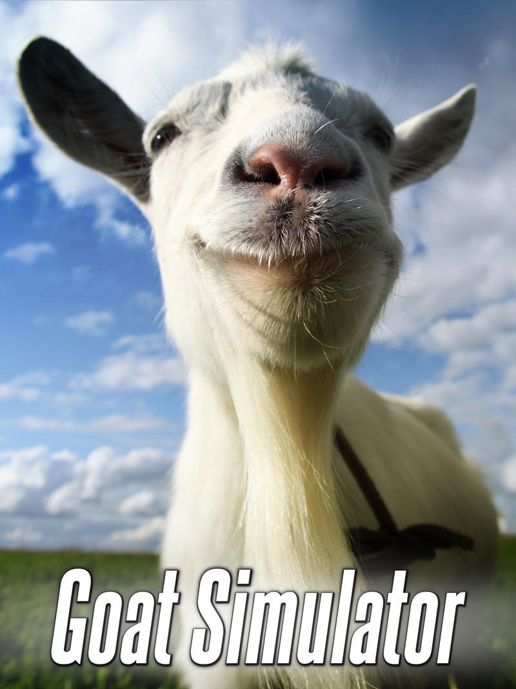

Goat Simulator
Goat Simulator
Detalhes
|  | |
| Tempo de jogo | 14m 0s |
| Última Atividade | 11/11/2024 16:34:56 |
| Adicionado | 11/02/2025 12:35:29 |
| Modificado | 11/02/2025 12:38:44 |
| Status de Conclusão | Jogado |
| Biblioteca | Steam |
| Fonte | Steam |
| Plataforma | PC (Windows) |
| Data de Lançamento | 01/04/2014 |
| Pontuação da Comunidade | 54 |
| Avaliação da crítica | 52 |
| Pontuação do Usuário | |
| Gênero | Adventure Indie Simulator |
| Desenvolvedor | Coffee Stain Studios Double Eleven |
| Editor | Coffee Stain Publishing Coffee Stain Studios |
| Funções | Co-Operative Multiplayer Single Player Split Screen |
| Links | Twitter Official Steam Wikia Wikipedia Twitch |
| Tag | |
Descrição
Goat Simulator é o que há de mais recente em tecnologia de simulação de cabras, levando a próxima geração de simulação de cabras até VOCÊ. Você não precisa mais fantasiar ser uma cabra, pois seus sonhos finalmente se tornaram realidade! WASD para fazer história.
Quanto ao jogo em si, Goat Simulator se resume a causar o máximo de estrago que puder sendo uma cabra. Ele tem sido comparado aos jogos de skate old-school, só que em vez de ser um esqueitista, você é uma cabra, e em vez de fazer manobras, você destrói coisas. Destrua coisas em grande estilo, como realizar um mortal para trás enquanto dá uma cabeçada e arremessa um balde pela janela, e você ganhará ainda mais pontos! Ou você pode dar uma olhada no Steam Workshop e criar suas próprias cabras, níveis, missões e mais! Quando se trata de cabras, nem mesmo o céu é o limite, já que provavelmente você pode aproveitar um bug para atravessá-lo e travar o jogo.
Quanto ao jogo em si, Goat Simulator se resume a causar o máximo de estrago que puder sendo uma cabra. Ele tem sido comparado aos jogos de skate old-school, só que em vez de ser um esqueitista, você é uma cabra, e em vez de fazer manobras, você destrói coisas. Destrua coisas em grande estilo, como realizar um mortal para trás enquanto dá uma cabeçada e arremessa um balde pela janela, e você ganhará ainda mais pontos! Ou você pode dar uma olhada no Steam Workshop e criar suas próprias cabras, níveis, missões e mais! Quando se trata de cabras, nem mesmo o céu é o limite, já que provavelmente você pode aproveitar um bug para atravessá-lo e travar o jogo.
Isenção de Responsabilidade
Goat Simulator é um jogo completamente idiota e, para sermos sinceros, você provavelmente deveria gastar seu dinheiro em outra coisa, como um bambolê, uma pilha de tijolos, ou talvez juntar dinheiro com os amigos e comprar uma cabra de verdade.Principais Características
- Você pode ser uma cabra
- Pontue destruindo coisas - gabe-se para os seus amigos por ser a cabra alfa
- Suporte ao Steam Workshop - crie suas próprias cabras, níveis, missões, modos de jogo e mais!
- MILHÕES DE BUGS! Eliminamos apenas os bugs de travamento. Todos os outros são hilários e vamos mantê-los.
- Física do jogo age inesperadamente o tempo todo
- Sério, veja o pescoço dessa cabra
- Você pode ser uma cabra